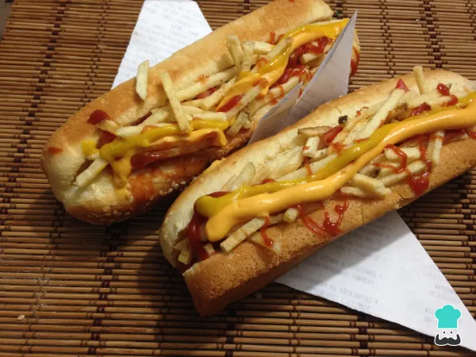

Hotdog

Este Hotdog contiene lo mas delicioso que usted podra probar.
- 2 unidades de pan de hot dog
- 2 unidades de salchichas
- 1 unidad de tomate
- 1 unidad de cebolla
- 1 chorro de salsa de ketchup
- 1 chorro de mostaza
- 2 lonchas de queso cheddar
- 1 puñado de patatas fritas finas
Conseguir ingredientes.
Picar la cebolla en cuadros pequeños y agregarle agua muy caliente
Lavar y picar el tomate en cuadros del mismo tamaño que la cebolla. Luego, escurrir la cebolla y mezclar con el tomate, agregar sal y pimienta al gusto.
En una sartén con un poco de agua colocamos las salchichas y las cocinamos durante 5 minutos a fuego medio.
Colocar las salchichas en el pan y cubrir con el picadillo de cebolla y tomate.
Cubrir con las papas tipo cerilla y agregar las salsas al gusto.